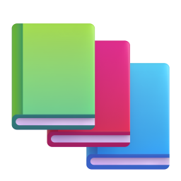

@mm.machine.ru01 / 06
Выучичтоугоднозавечер.4 шагаснейросетью


листай
Тема простыми словами, как для 12 лет.
Объясни тему как двенадцатилетнему

Пусть проверит, что ты понял.
Задай мне 5 вопросов на понимание

Нейросеть разберёт ошибки и объяснит, где ты промахнулся.


Всё главное на одном листе, чтобы повторить утром.
Сделай шпаргалку на одну страницу